Deployment Overview
This document describes how to set up AuthPoint multi-factor authentication (MFA) for Azure Active Directory users that use Mobile VPN with L2TP
To configure AuthPoint MFA for Active Directory users that use Mobile VPN with L2TP, see Firebox Mobile VPN with L2TP Integration with AuthPoint.
Your WatchGuard Firebox Cloud must already be configured and deployed before you set up MFA with AuthPoint.
Integration Summary
The hardware and software used in this guide include:
- Firebox Cloud with Fireware v12.6.3 or higher
- AuthPoint Gateway v6.1 or higher
- Windows Server 2016 with Microsoft Network Policy Server (NPS)
WatchGuard Firebox Cloud Authentication Data Flow with AuthPoint
AuthPoint communicates with various cloud-based services and service providers with the RADIUS protocol. This diagram shows the data flow of an MFA transaction for a WatchGuard Firebox Cloud.

Before You Begin
Before you begin these procedures, make sure that:
- You have an Azure Active Directory global administrator account within the Azure Active Directory tenant.
- You have an active Azure subscription.
- You have a WatchGuard Firebox Cloud deployed on Azure.
- You have an AuthPoint Gateway deployed on Azure.
- You have installed and configured Azure Active Directory Domain Services.
- The NPS has joined the Azure AD Domain Services managed domain.
- You have installed Network Policy and Access Services, which includes Network Policy Server (NPS).
- You have installed and configured the v6.1.0 or higher of the AuthPoint Gateway (see About Gateways).
- A token is assigned to a user in AuthPoint.
Additional charges might apply for the use of Microsoft Azure. To learn more about Microsoft Azure, go to What is Microsoft Entra Domain Services.
Configure Microsoft NPS Server
To enable users synced from Azure Active Directory to successfully authenticate with MS-CHAPv2, you must configure Microsoft Network Policy Server (NPS). NPS is required to validate the user credentials from MS-CHAPv2 RADIUS requests against Azure Active Directory.
To configure Microsoft NPS Server:
- On the Windows server, run Server Manager.
- Select Tools > Network Policy Server.
The Network Policy Server console appears. - Select RADIUS Clients and Servers > RADIUS Clients.
- Right-click RADIUS Clients and select New.
The New RADIUS Client window appears. - In the Friendly name text box, type a name.
- In the Address (IP or DNS) text box, type the IP address of the AuthPoint Gateway. In our example, the IP address of the AuthPoint Gateway is 10.0.2.5.
- In the Shared secret and Confirm shared secret text boxes, type a shared secret key. This key is used to communicate with the RADIUS server (AuthPoint Gateway).
You must use the same shared secret key when you configure your Firebox Cloud in the Configure RADIUS Authentication section and your RADIUS client resource in the Add a RADIUS Client Resource in AuthPoint section.
- Click OK.
- Select Policies > Connection Request Policies. Make sure the default policy is enabled.
- Right-click Network Policies and select New.
The New Network Policy window appears. - In the Policy Name text box, type a name for this policy. In our example, we type ecotest.
- Click Next.
- In the Specify Conditions section, click Add.
- Select User Groups. Click Add > Add Groups.
- In the Enter the object name to select text box, type the group name. The name of this group must match the name of the Azure Active Directory group your users belong to.
- Click Check Names.
Enter network credentials window appears, you must enter your credentials for an account with permissions for the Azure AD domain. - To return to the New Network Policy window, click OK three times.
- Click Next.
- Click Next.
- In the Configure Authentication Methods section, clear the User can change password after it has expired check box.
- Click Next.
- Click Next.
- In the Configure Settings section, click Add. In our example, we use group authentication, if you want to use user authentication, skip Steps 23–28.
- From the Attributes list, select Filter-Id. Click Add.
- Click Add.
- In the Attribute Information window, in the text box type a group name. The name of this group must match the name of the Azure Active Directory group your users belong to.
- Click OK twice.
- Click Close.
- Click Next.
- Click Finish.
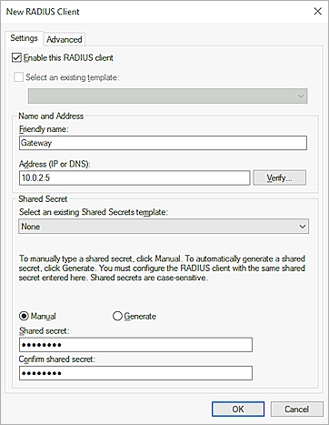
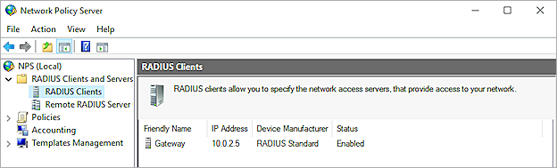
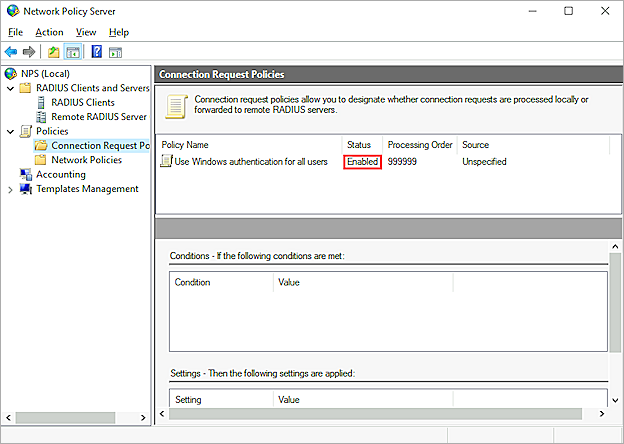
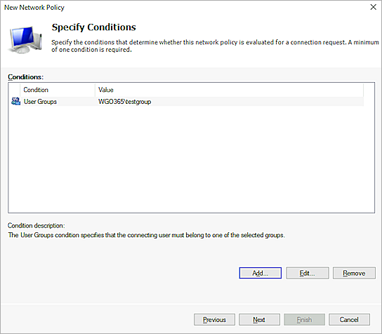

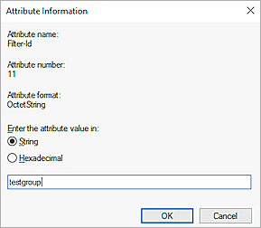
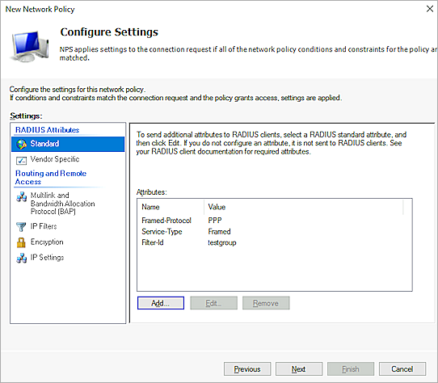
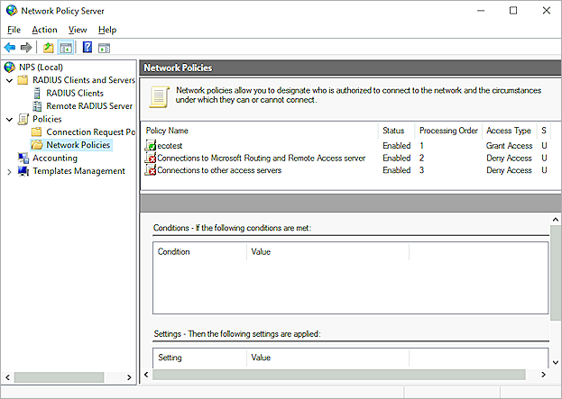
Configure the Firebox Cloud
Before you configure the WatchGuard Firebox Cloud, you must deploy it on Azure. For detailed steps, see Deploy Firebox Cloud on Microsoft Azure.
To configure the Firebox Cloud:
- Log in to the Azure portal with your Microsoft Azure account credentials.
- Click Resource groups.
- Click the Firebox Cloud resource group you created.
- Click the NSG-<Firebox Cloud VM name>Eth0Management network security group.
- Select Settings > Inbound security rules > Add.
- From the Destination drop-down list, select IP Addresses.
- In the Destination IP addresses/CIDR ranges text box, type the Firebox Cloud external IP address, including the public and private addresses.
- In the Destination port ranges text box, type *.
- In the Priority text box, type the number between 100 and 4096. In our example, we type 1040.
- In the Name text box, type a name.
- Leave the default value for all other settings.
- Click Add.
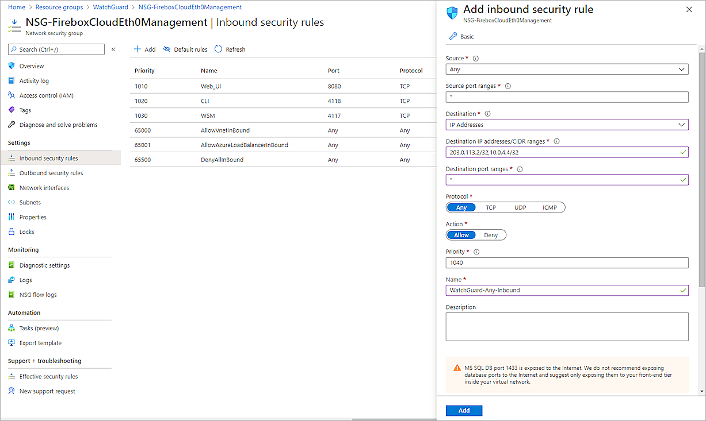
After you configure and deploy the Firebox Cloud, you must configure the RADIUS authentication settings and enable Mobile VPN with IKEv2 on your Firebox Cloud.
Configure RADIUS Authentication
When a user authenticates with AuthPoint MFA, AuthPoint does not send a response to the Firebox until the user approves the push notification that is sent to them or until the push authentication expires.
When you configure the RADIUS authentication server, the timeout value must be greater than the combined push timeout for AuthPoint (60 seconds) and NPS (30 seconds). With the default settings on the RADIUS authentication server, if a user does not approve the push notification that is sent to them within 30 seconds (3 tries, 10 seconds each), the Firebox will fail over to another server, even though the current server is not down.
To configure RADIUS authentication:
- Log in to Fireware Web UI (https://<Eth0_public_IP>:8080).
- Select Authentication > Servers.
The Authentication Servers page appears. - From the Authentication Servers list, click RADIUS.
The RADIUS page appears. - Click Add.
The Add page appears. - In the Domain Name text box, type the domain name for this RADIUS server. Users must specify this domain name on the user login page. You cannot change the domain name after you save the settings.
- In the Primary Server Settings section, select the Enable RADIUS Server check box.
- In the IP Address text box, type the IP address of the RADIUS server (AuthPoint Gateway).
- In the Port text box, leave the default port setting of 1812. This is the default port used for communication with the RADIUS server (AuthPoint Gateway).
If you already have a RADIUS server installed that uses port 1812, or if NPS and the Gateway are installed on the same server, you must use a different port for the AuthPoint Gateway.
- In the Shared Secret and Confirm Secret text boxes, type the shared secret key that you specified in the Configure Microsoft NPS Server section. This is the password that the RADIUS server (AuthPoint Gateway) and the RADIUS client (Firebox Cloud) will use to communicate.
- In the Timeout text box, type 90.
- Leave the default value for Group Attribute.
- Click Save.
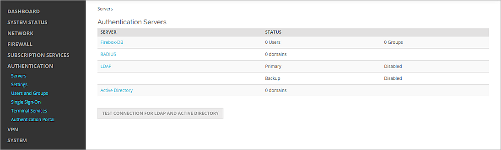
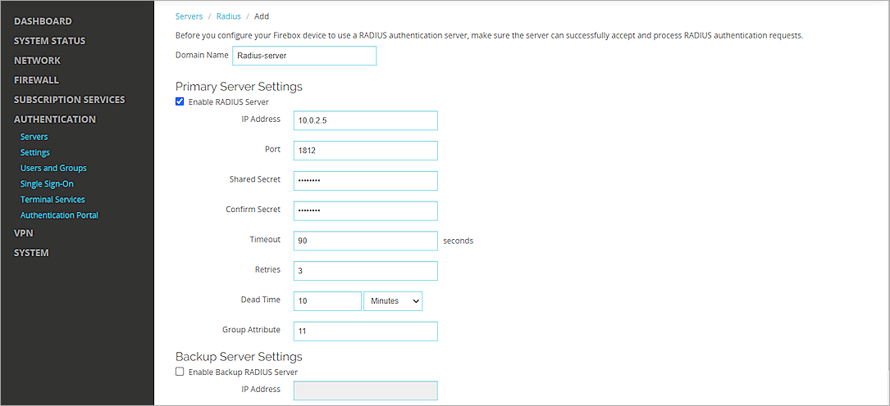
Configure Mobile VPN with L2TP
To configure Mobile VPN with L2TP:
- Select VPN > Mobile VPN.
- In the L2TP section, click Manually Configure.
- Select the Activate Mobile VPN with L2TP check box.
- Select the Authentication tab.
- In the Authentication Server section, from the drop-down list, select the authentication server you created. Click Add.
- To make your authentication server the default authentication server, in the Authentication Server list, select your authentication server and click Move Up to move it to the top of the list.
Mobile VPN with L2TP uses the default authentication server unless a user specifies an authentication server as part of the user name when they authenticate from an L2TP client. - In the Users and Groups section, from the Create new drop-down list, select the authentication server you created.
- From the adjacent drop-down list, select Group.
You can add a user or a group. In our example, we add a group.
- Click Add.
The Add User or Group window appears. - For Type, select Group.
- In the Name text box, type a name for the group. The name of this group must match the Azure Active Directory group your users belong to.
If you add a user, the name of the user must match the name of the Azure Active Directory user.
- From the Authentication Server drop-down list, select your authentication server.
- Click Save.
- Select the IPSec tab.
- Select the Enable IPSec check box.
- In the Credential Method section, select Use Pre-Shared Key.
- In the adjacent text box, type a pre-shared key. You must specify this same key when you configure the VPN client.
- Click Save.
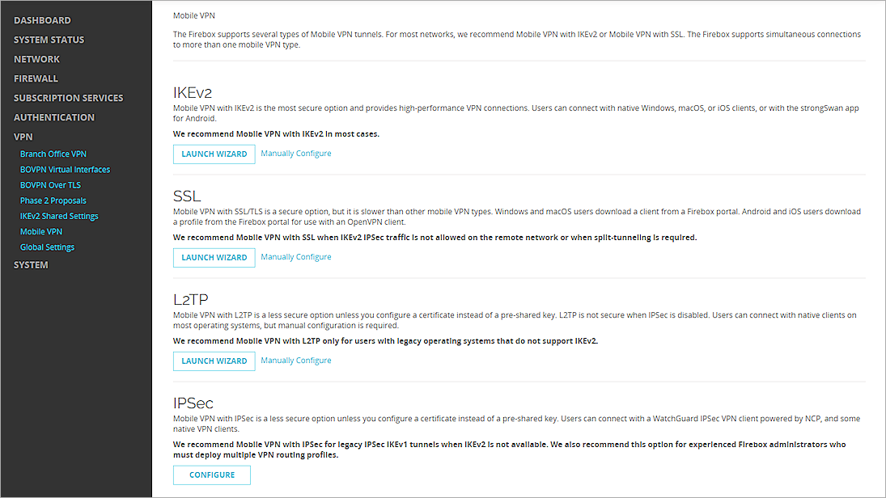
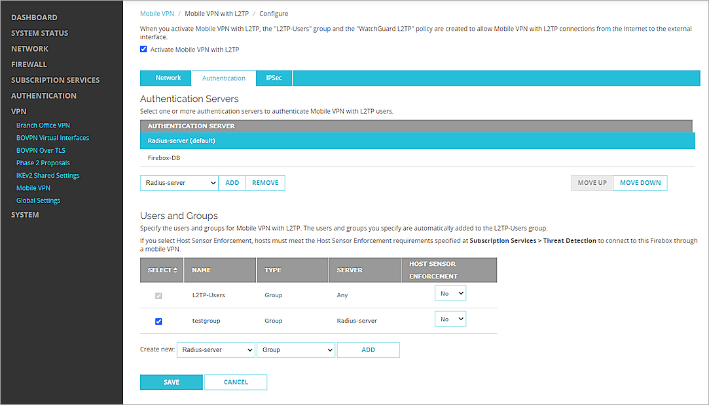
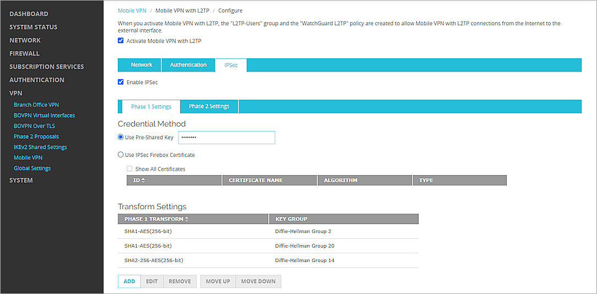
Configure AuthPoint
Before AuthPoint can receive authentication requests from the Firebox Cloud, you must:
- Add the Firebox as a RADIUS client resource in AuthPoint.
- Add an authentication policy for the Firebox RADIUS client resource or add the Firebox RADIUS client resource to an existing authentication policy.
- Bind the Firebox RADIUS client resource to the AuthPoint Gateway.
Add a RADIUS Client Resource in AuthPoint
From the AuthPoint management UI:
- From the navigation menu, select Resources.
Click Add Resource.
The Add Resource page opens.

- From the Type drop-down list, select RADIUS Client.
Additional fields appear.

- On the RADIUS page, in the Name text box, type a name for this resource.
- In the RADIUS client trusted IP or FQDN text box, type the IP address that your RADIUS client uses to send RADIUS packets to the AuthPoint Gateway. This must be a private IP address. For Fireboxes, this is usually the Trusted IP address of your Firebox.
- Leave the default value in the Value sent for RADIUS attribute 11 (Filter-Id) drop-down list. This setting is not supported for MS-CHAPv2 authentication requests made by Azure Active Directory users.
- In the Shared Secret text box, type the shared secret key that you specified in the Configure Microsoft NPS Server and Configure RADIUS Authentication section. This is the password that the RADIUS server (AuthPoint Gateway) and the RADIUS client (Firebox Cloud) will use to communicate.
- To configure the RADIUS client resource to accept MS-CHAPv2 authentication requests, click the Enable MS-CHAPv2 toggle.
Additional fields appear. - In the NPS RADIUS Server trusted IP or FQDN text box, type the IP address NPS RADIUS server.
- In the Port text box, type 1812.
If NPS and the Gateway are installed on the same server, the port that the Gateway uses to communicate with NPS must be different than the port that the Gateway uses to communicate with the RADIUS client.
- In the Timeout In Seconds text box, type 30.
- Click Save.
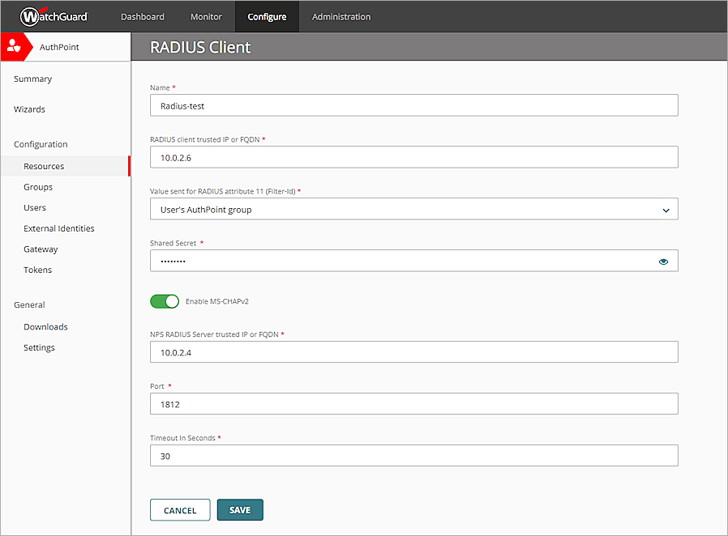
Add a Group in AuthPoint
You must have at least one user group in AuthPoint to configure MFA. If you already have a group, you do not have to add another group.
To add a WatchGuard Cloud-hosted group to the WatchGuard Cloud Directory:
- Go to Configure > Directories and Domain Services.
- Click the WatchGuard Cloud Directory domain name. If you have not yet added the WatchGuard Cloud Directory, click Add Authentication Domain and select the WatchGuard Cloud Directory.
The New Group page appears.

- In the Groups tab, click Add Group.
- In the Group Name text box, type a descriptive name for the group.
- (Optional) In the Description text box, type a description of the group.

- Click Save.
Your group is added to the WatchGuard Cloud Directory and to AuthPoint.
Add an Authentication Policy to AuthPoint
Authentication policies specify which resources users can authenticate to and which authentication methods they can use (Push, QR code, and OTP).
You must have at least one authentication policy in AuthPoint that includes the Firebox resource. If you already have authentication policies, you do not have to create a new authentication policy. You can add this resource to your existing authentication policies.
Users that do not have an authentication policy for a specific resource cannot authenticate to log in to that resource.
To configure an authentication policy:
- From the navigation menu, select Authentication Policies.
- Click Add Policy.

- Type a name for this policy.
- From the Select the authentication options drop-down list, select Authentication options and select the Password and Push check boxes.
QR code authentication is not supported for RADIUS client resources. OTP authentication is not supported for RADIUS client resources with MS-CHAPv2 enabled.

- Select which groups this policy applies to. You can select more than one group. To configure this policy to apply to all groups, select All Groups.
- Select the resource that you created in the previous section. If you want this policy to apply to additional resources, select each resource this policy applies to. To configure this policy to apply to all resources, select All Resources.

-
(Optional) If you have configured policy objects such as a Network Location, select which policy objects apply to this policy. When you add a policy object to a policy, the policy only applies to user authentications that match the conditions of the policy objects. For example, if you add a Network Location to a policy, the policy only applies to user authentications that come from that Network Location. Users who only have a policy that includes a Network Location do not get access to the resource when they authenticate outside of that Network Location (because they do not have a policy that applies, not because authentication is denied).
For RADIUS authentication, policies that have a Network Location do not apply because AuthPoint does not have the IP address of the user.
If you configure policy objects, we recommend that you create a second policy for the same groups and resources without the policy objects. The policy with the policy objects should have a higher priority.

- Click Save.
Your policy is created and added to the end of the policy list.When you create a new policy, we recommend that you review the order of your policies. AuthPoint always adds new policies to the end of the policy list.

Bind the RADIUS Resource to a Gateway
To use RADIUS authentication with AuthPoint, you must have the AuthPoint Gateway installed on Azure and you must assign your RADIUS resources to the Gateway in the AuthPoint management UI. The Gateway functions as a RADIUS server.
If you have not configured and installed the AuthPoint Gateway, see About Gateways.
To assign your RADIUS resources to the Gateway:
- From the navigation menu, select Gateway.
- Select the Name of the Gateway.
-
From the RADIUS section, in the Port text box, type the port number used to communicate with the Gateway. The default ports are 1812 and 1645.
If you already have a RADIUS server installed that uses port 1812 or 1645, you must use a different port for the AuthPoint Gateway.
- From the Select a RADIUS Resource drop-down list, select your RADIUS client resource.
- Click Save.
Sync Users to AuthPoint from Azure Active Directory
To sync users from Azure Active Directory, you must add an Azure AD external identity in the AuthPoint management UI.
In AuthPoint, Azure AD external identities represent external user databases. They connect to user databases to get user account information and validate passwords. The queries you add to an external identity specify which users to sync from your Azure Active Directory database. They pull user information and create AuthPoint user accounts for the users that are found.
For detailed instructions to sync users from Azure Active Directory, see Sync Users from Azure Active Directory.
Test the Integration
To test the integration of AuthPoint and the configuration of your Mobile VPN with L2TP, you authenticate with a mobile token on your mobile device. For RADIUS resources with MS-CHAPv2 enabled, you authenticate with a push notification (you receive a push notification in the mobile app that you must approve to authenticate).
There is a known issue where some Windows operating systems do not support Internet Protocol Security (IPsec) Network Address Translation Traversal (NAT-T) security associations to servers that are located behind a NAT device. To enable communication, you can modify a registry value on the VPN client computer. To learn how to configure the registry value, see Configure a L2TP/IPsec server behind a NAT-T device.
- From a Windows 10 computer, select Settings.:
- Select Network & Internet.
- Select VPN.
- Click Add a VPN connection.
The Add a VPN connection window opens. - From the VPN provider drop-down list, select Windows (built-in).
- In the Connection name text box, type a name. In our example, we type VPN-L2TP.
- In the Server name or address text box, type the public IP address of the Firebox Cloud. In our example, the address is 203.0.113.2.
- From the VPN type drop-down list, select L2TP/IPsec with pre-shared key.
- From the Type of sign-in info drop-down list, select User name and password.
- Click Save.
The Add a VPN connection window closes. - In the Related Settings section, click Change adapter options.
- Right-click the name of the VPN you created and select Properties.
- Select the Security tab.
- From the Data encryption drop-down list, select Require encryption (disconnect if server declines).
- In the Authentication section, select Allow these protocols.
- Select Microsoft CHAP Version 2 as the only allowed protocol.
- Click Advanced settings.
- Select Use pre-shared key for authentication.
- In the Key text box, type the shared secret key that you specified in the Configure RADIUS Authentication section.
- Click OK to close the Advanced Properties and VPN Properties windows.
- Select the VPN you created. Click Connect.
- Type your user name and password.
- Approve the authentication request that is sent to your mobile device.
The VPN connects successfully.